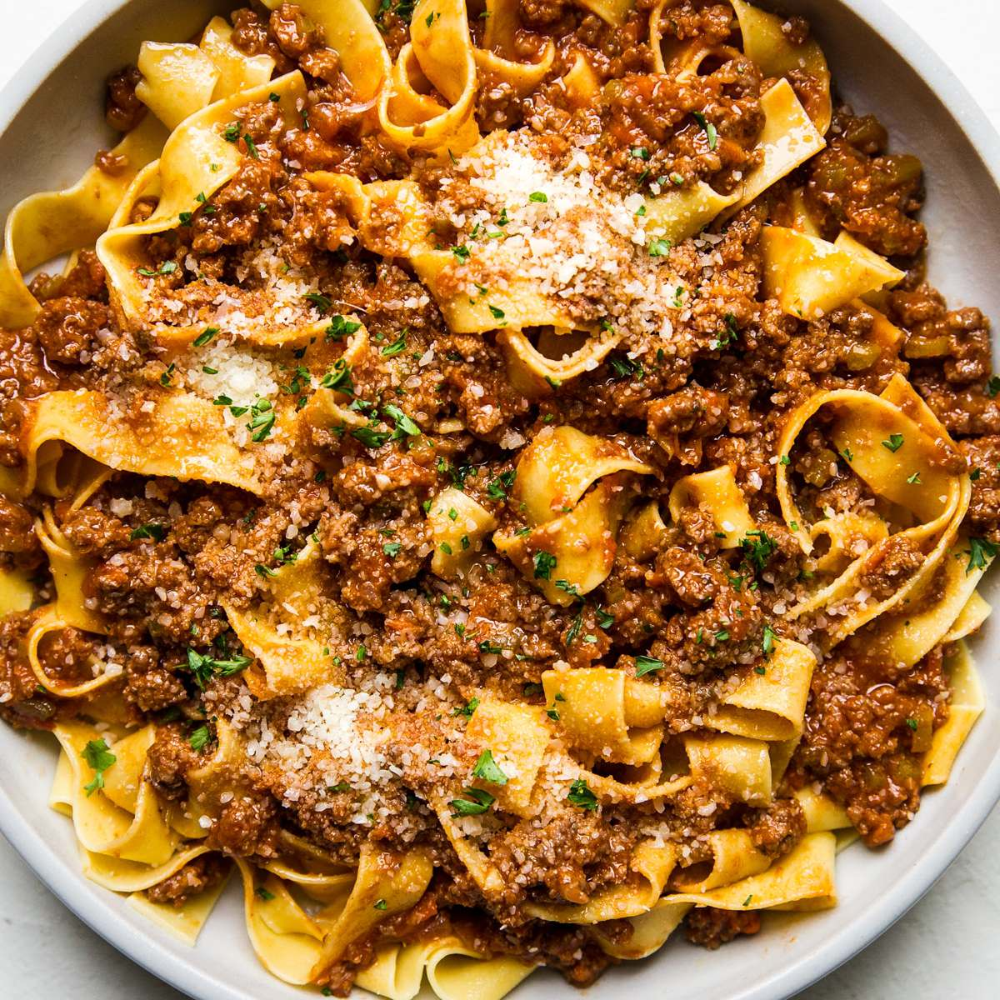

Home
Bolognese

Bolognese is a rich, slow-simmered Italian meat sauce with deep, savory flavors. Made with a blend of ground meat, aromatic vegetables, tomatoes, and a touch of wine and milk, this hearty sauce develops a velvety texture over time. Perfectly paired with pasta like tagliatelle or pappardelle, it’s a comforting and classic dish that brings out the best in traditional Italian cooking.
Ingredient List
- 2 tbsp olive oil
- 1 small onion
- 1 carrot
- 1 celery stalk
- 2 gloves garlic
- 1 lb ground beef
- 1/2 cup dry white wine
- 1 cup whole milk
- 1 can (28 0z) crushed tomatoes
- 2 tsbp tomato paste
Directions
- Heat olive oil in a large pot over medium heat. Add onion, carrot, and celery, cooking until softened. Stir in garlic and cook for another minute.
- Add ground beef and cook, breaking it up with a spoon, until browned. Drain excess fat if necessary.
- Pour in the wine and simmer until mostly evaporated. Stir in the milk and let it cook down.
- Add crushed tomatoes, tomato paste, salt, pepper, oregano, bay leaf, and nutmeg. Stir well.
- Reduce heat to low and let simmer uncovered for 1.5 to 3 hours, stirring occasionally and adding broth if it gets too thick.
- Cook pasta according to package instructions. Drain and toss with the sauce.
- Serve hot, topped with grated Parmesan. Enjoy your rich, hearty Bolognese!